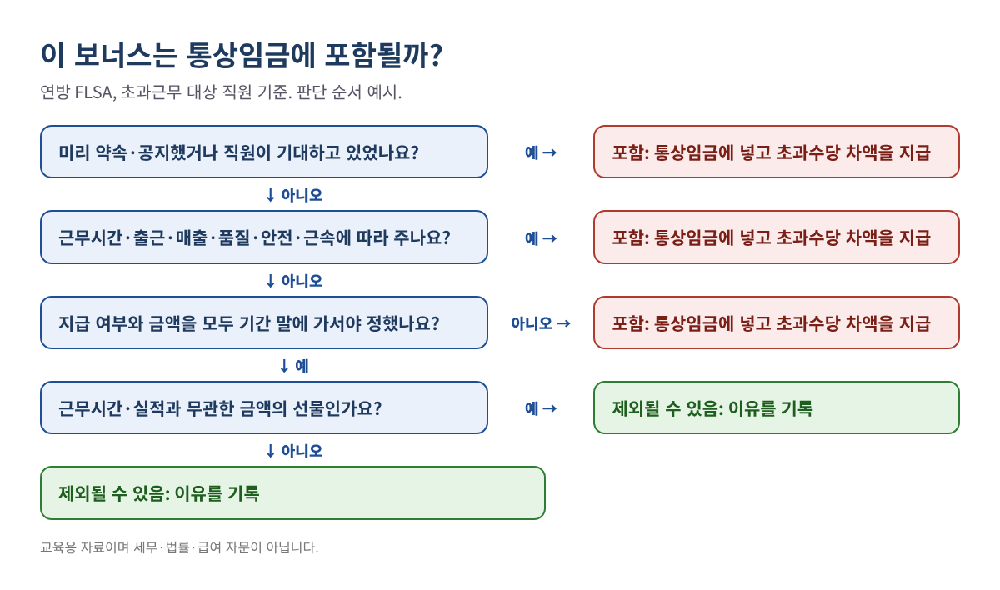
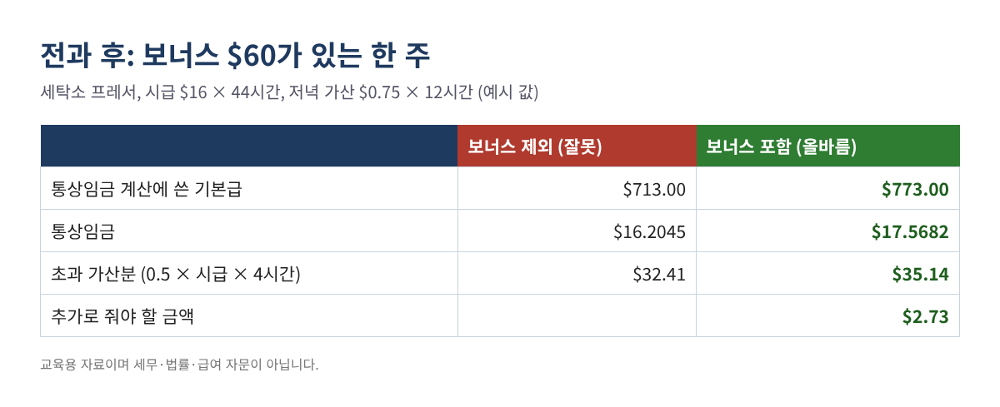
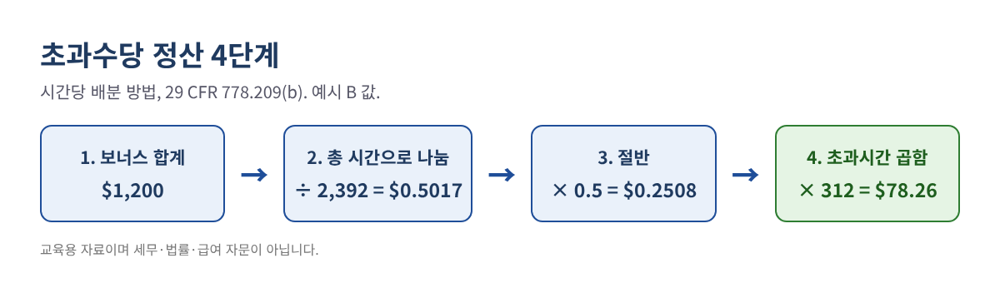
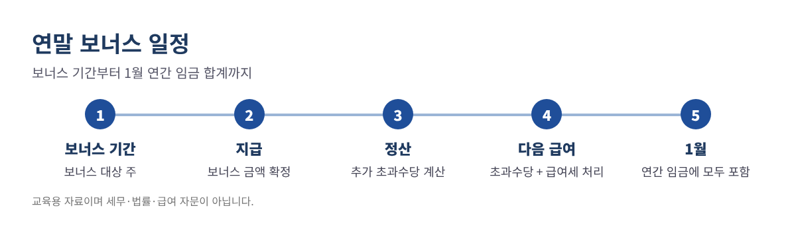

12월이면 많은 식당·네일샵·세탁소·가게 사장님들이 시급 직원에게 연말 보너스, 개근 보너스, 실적 보너스를 줍니다. 그런데 잘 알려지지 않은 사실이 하나 있습니다. 미국 연방 공정근로기준법(FLSA)에서는 이런 보너스 대부분이 초과근무 수당의 기준 시급을 바꿉니다. 보너스 대상 기간에 직원이 초과근무를 했다면, 이미 준 초과수당이 조금 모자라고 그 차액(초과수당 정산)을 추가로 줘야 합니다.
금액은 보통 크지 않지만 직원 수와 햇수가 쌓이면 무시하기 어렵고, 방법만 알면 계산은 간단합니다. 아래 순서대로 예시와 엑셀·구글 시트 수식을 따라 하시면 직접 계산하실 수 있습니다.
초과근무 면제 대상인 월급제 매니저에게는 해당되지 않고, 보너스 기간에 한 번도 40시간을 넘기지 않은 직원도 정산할 것이 없습니다.
FLSA는 통상임금(regular rate), 즉 일한 대가로 받은 모든 금액을 근무시간으로 나눈 시급을 기준으로 씁니다. 초과근무 수당은 이 통상임금의 1.5배입니다. 미 노동부 Fact Sheet #56C에 따르면 개근·실적·품질·무사고 보너스처럼 미리 알리거나 직원이 기대하는 보너스는 비재량 보너스로 반드시 포함해야 합니다. 다음 세 가지가 모두 맞을 때만 재량 보너스로 빼실 수 있습니다.
이름으로 정해지지 않습니다. 10월에 미리 "연말에 보너스 준다"고 했거나 매년 주는 보너스라면 "명절 보너스"라고 불러도 보통 재량 보너스가 아닙니다. 반대로 전 직원에게 같은 상품권을 주는 것처럼 근무시간·실적과 무관한 선물은 제외될 수 있습니다.

| 보너스 종류 (예시) | 보통 |
|---|---|
| 결근 없으면 주는 개근 보너스 | 포함 |
| 정해진 공식의 생산량·매출 보너스 | 포함 |
| 특정 날짜까지 근무하면 주는 근속 보너스 | 포함 |
| 규정으로 약속했거나 매년 주는 연말 보너스 | 포함 |
| 근무와 무관한 같은 금액의 명절 선물 | 제외될 수 있음 |
| 미리 알리지 않은 깜짝 보너스 | 제외될 수 있음 |
표 1. 흔한 보너스 종류. 예시일 뿐이며 실제 사정에 따라 달라집니다.
보너스가 한 주에 대한 것이라면, 그 주 기본급에 보너스를 더하고 총 근무시간으로 나눠 통상임금을 구한 뒤, 초과근무 1시간마다 그 절반을 더 줍니다. 미 노동부가 직접 든 예시입니다. 시급 $10로 43시간이면 $430, 보너스 $50를 더해 $480. 통상임금은 $480 ÷ 43 = $11.16. 그 절반 $5.58에 초과 3시간을 곱하면 $16.74이고, 그 주 총액은 $496.74입니다.
야간 가산 시급이 있는 예시도 보겠습니다(예시 값). 세탁소 프레서가 시급 $16로 44시간 일했고, 그중 12시간은 저녁 가산 $0.75가 붙었으며, 생산량 보너스 $60를 받았습니다. 기본급은 44 × $16 + 12 × $0.75 + $60 = $773, 통상임금은 $773 ÷ 44 = $17.5682, 초과 가산분은 0.5 × $17.5682 × 4 = $35.14입니다. 보너스를 빼고 계산하면 $32.41이라 $2.73이 모자랍니다.

한 주 계산 수식 (셀 이름은 직접 바꿔 넣으세요):
=ROUND(0.5*(시급*시간+가산시급*가산시간+보너스)/시간*MAX(0,시간-40),2)
연말·분기 보너스는 여러 주를 대상으로 합니다. 연방 규정 29 CFR 778.209에 따르면 평소처럼 초과수당을 먼저 주고, 보너스 금액이 정해진 뒤 보너스를 번 주들로 다시 나눠 초과시간마다 절반을 더 주면 됩니다. 특정 주에 연결할 수 없으면 일한 시간마다(또는 주마다) 같은 금액을 번 것으로 볼 수 있습니다. 가장 간단한 시간당 방법은 다음과 같습니다.
추가 초과수당 = 0.5 × (보너스 ÷ 기간 총 근무시간) × 기간 초과근무 시간

예시 B (예시 값): 네일샵 규정에 연말 보너스 $1,200가 약속되어 있습니다. 직원은 1년 52주 동안 주 46시간, 총 2,392시간을 일했고 그중 312시간이 초과근무입니다.
| 셀 | 입력 내용 | 예시 결과 |
|---|---|---|
| B1 | 보너스: 1200 | $1,200.00 |
| B2 | 기간 총 근무시간: 2392 | 2,392 |
| B3 | 기간 초과근무 시간: 312 | 312 |
| B4 | =ROUND(0.5*B1/B2*B3,2) | $78.26 |
| B5 | =ROUND(B4*1.0765,2) | $84.25 |
표 2. 예시 B의 엑셀·구글 시트 배치. B5는 고용주 사회보장세 6.2%와 메디케어 1.45%를 더한 금액입니다.
같은 조건의 직원이 5명이면 약 $421입니다. 예시 A (예시 값): 식당 요리사가 13주 분기 개근 보너스 $390를 받았고, 그 기간 546시간 중 32시간이 초과근무였습니다. 시간당 방법은 $390 ÷ 546 = $0.7143, × 0.5 × 32 = $11.43. 주당 방법(매주 $30씩을 그 주 시간으로 나눔)은 $10.58입니다. 합리적인 방법 하나를 골라 꾸준히 쓰시면 됩니다.

금액이 정해지면 정산액을 초과근무 수당으로, 예를 들어 다음 급여일에 지급하세요. 다른 급여처럼 원천징수와 급여세를 처리하고, 연말 임금 합계에 보너스와 정산액이 모두 들어갔는지 확인한 뒤 계산표를 급여 기록과 함께 보관하세요.
미리 알렸거나, 매년 당연히 주거나, 근무시간·실적에 따라 정해진다면 보통 포함됩니다. 근무와 무관하게 같은 금액을 주는 진짜 선물이라면 제외될 수 있습니다.
규정상 보너스 금액을 알 수 있을 때까지 기다렸다가 다시 나눠 계산할 수 있습니다. 보너스와 함께 또는 다음 급여일에 주시면 관리가 쉽습니다.
특정 주에 연결할 수 없다면 시간당 균등, 주당 균등 두 방법이 29 CFR 778.209(b)에 나와 있습니다. 시간당 방법은 숫자 세 개만 있으면 됩니다.
초과근무 면제 요건을 갖춘 매니저라면 해당되지 않습니다. 초과근무 수당을 받는 직원이라면 월급제라도 해당될 수 있습니다.
면책: 이 글은 교육용 정보이며 세무·법률·급여 자문이 아닙니다. 초과근무 대상 직원에 대한 연방 FLSA 규칙을 다루며, 주·지역 법은 더 많은 것을 요구할 수 있습니다. 모든 숫자는 예시 값입니다. 미 노동부나 주 노동청에서 본인 상황을 확인하세요.
위 과정을 그대로 해 주는 보너스 초과근무 수당 계산기 2026은 아래 무료 키트 다운로드에서 가입 없이 무료로 받으실 수 있습니다(엑셀 + PDF 가이드).